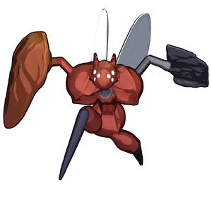

Vesra
背景

Peltapod Colony 的女王与守护者。由于维度不稳定，她们被迫离开原本的栖息地，Vesra 因此变得极端有领地意识，并且会暴力保护后代。作为维度闯入物种，严酷环境使 Queen Vesra 的身体适应成更偏战斗的形态，拥有更流线的身体部件。
策略
Vesra 战斗由 2 个子阶段组成：常规形态和茧形态。处于茧中时，Vesra 会免疫所有伤害。
在常规形态下，Vesra 会在地面招式组和空中招式组之间切换。HP 降至 50% 时，Vesra 会进入茧状态，生成一只 Peltapod Guard，之后按固定间隔生成普通 Peltapod。Peltapod Guard 被击杀后，她会离开茧并回到常规形态。
统计
基础 HP：4800
伤害：物理
| 属性 | 抗性 |
|---|---|
| 物理 | 中性 (1x) |
| 火焰 | 弱点 (1.5x) |
| 冰霜 | 抗性 (0.75x) |
| 电击 | 中性 (1x) |
| 光耀 | 抗性 (0.75x) |
| 暗影 | 弱点 (1.25x) |
| 毒 | 抗性 (0.5x) |
趣闻
Vesra 的名字来自 Ecliptica 的一位贡献者：VesraVampire。